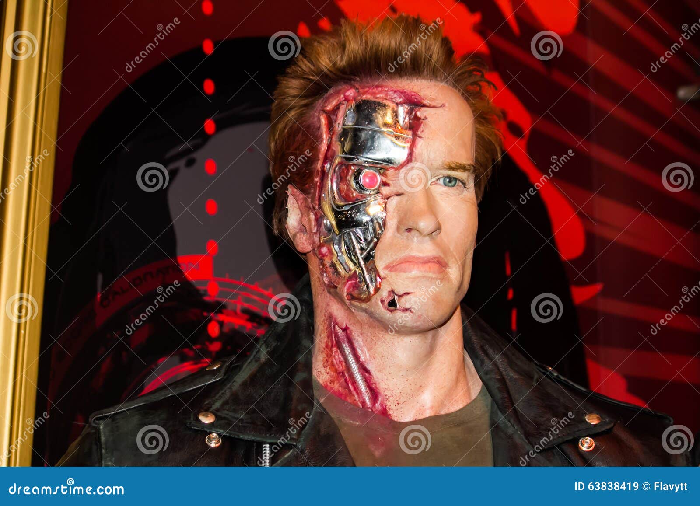

Iconic Movie Roles

The Terminator
A 1984 science fiction action film directed by James Cameron. Schwarzenegger plays the role of a
cyborg assassin sent back in time to kill Sarah Connor.
In Arnold Schwarzenegger
…Became an international star with The Terminator (1984) and over the next 20 years appeared
in two sequels (1991 and 2003). His other films during this time included Predator (1987),
Kindergarten Cop (1990), Total Recall (1990), True Lies (1994), and The 6th
1982–2003: Action superstar
Schwarzenegger's breakthrough film was the sword and sorcery epic Conan the Barbarian in 1982, which was a
box-office hit.[12] This was followed by a sequel, Conan the Destroyer, in 1984, although it was not as
successful as its predecessor.[68] In 1983, Schwarzenegger starred in the promotional video Carnival in Rio.[69]
In 1984, he made his first appearance as the eponymous character in James Cameron's science fiction action film
The Terminator.[12][31][70] It has been called his acting career's signature role.[71] Following this,
Schwarzenegger made another sword and sorcery film, Red Sonja, in 1985.[68] During the 1980s, audiences had an
appetite for action films, with both Schwarzenegger and Sylvester Stallone becoming international stars.[31]
During the Schwarzenegger-Stallone rivalry they attacked each other in the press, and tried to surpass the other
with more on-screen killings and larger weapons.[72] Schwarzenegger's roles reflected his sense of humor,
separating him from more serious action hero films. He made a number of successful action films in the 1980s,
such as Commando (1985), Raw Deal (1986), The Running Man (1987), Predator (1987), and Red Heat (1988).